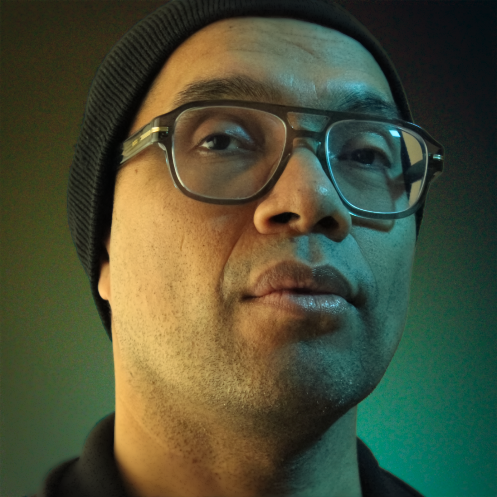

Basé à Montréal, KREOGENESIS se consacre à la création de films indépendants et originaux, avec un intérêt particulier pour le drame psychologique et les histoires profondément humaines.

Jamie Zampini est un cinéaste indépendant basé à Montréal. Né au Guatemala et adopté par une famille italo-canadienne, il a développé un regard unique sur la condition humaine et les subtilités des relations.
Diplômé en production cinématographique à l’Université Concordia et titulaire d’un AEC en graphisme, Jamie allie narration et maîtrise technique. Son apprentissage autodidacte en composition musicale et montage lui permet de créer des films distincts par leur esthétique et leur intensité émotionnelle.
Il a réalisé six courts-métrages, dont deux présentés sur la scène internationale, et a été scénariste du long métrage L’Éveil du Mouton (2024). Son travail se concentre sur des histoires intimes et universelles, explorant l’identité, la mémoire et la résilience à travers des personnages profondément humains.

 Youtube
Youtube